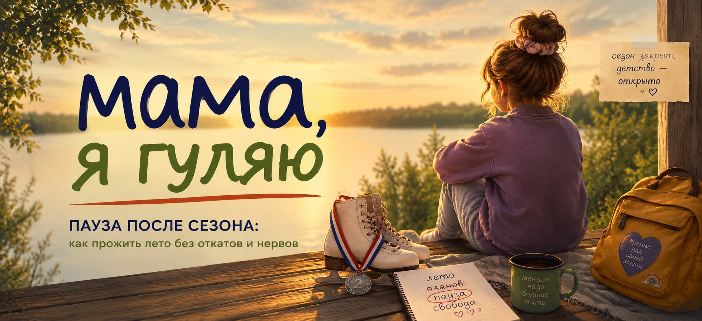
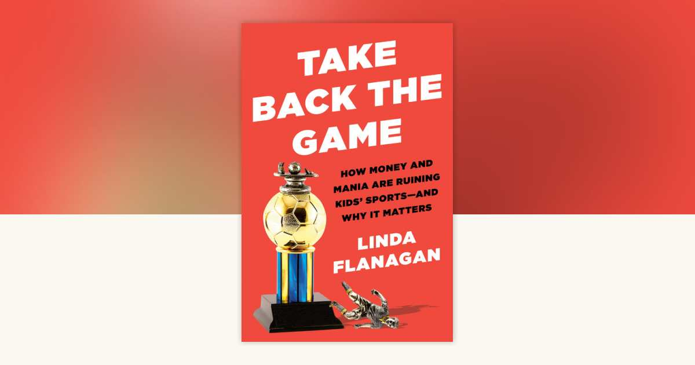
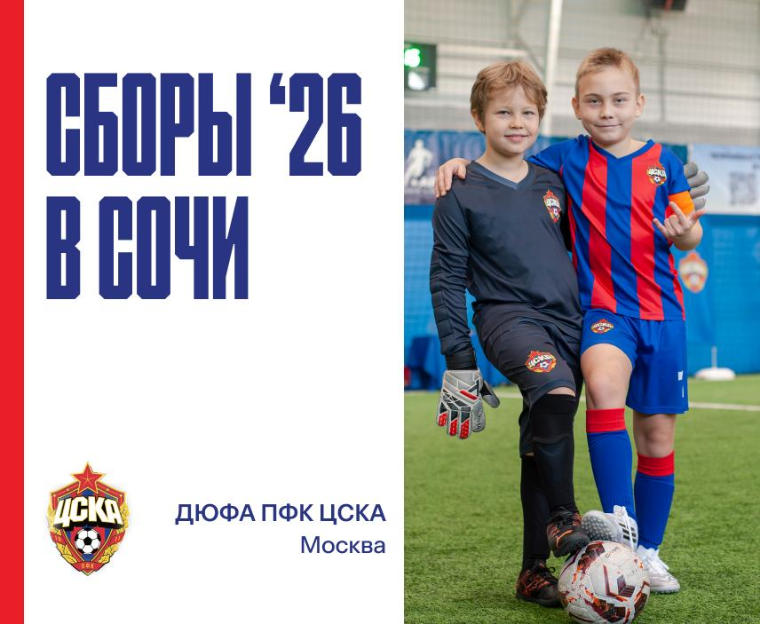
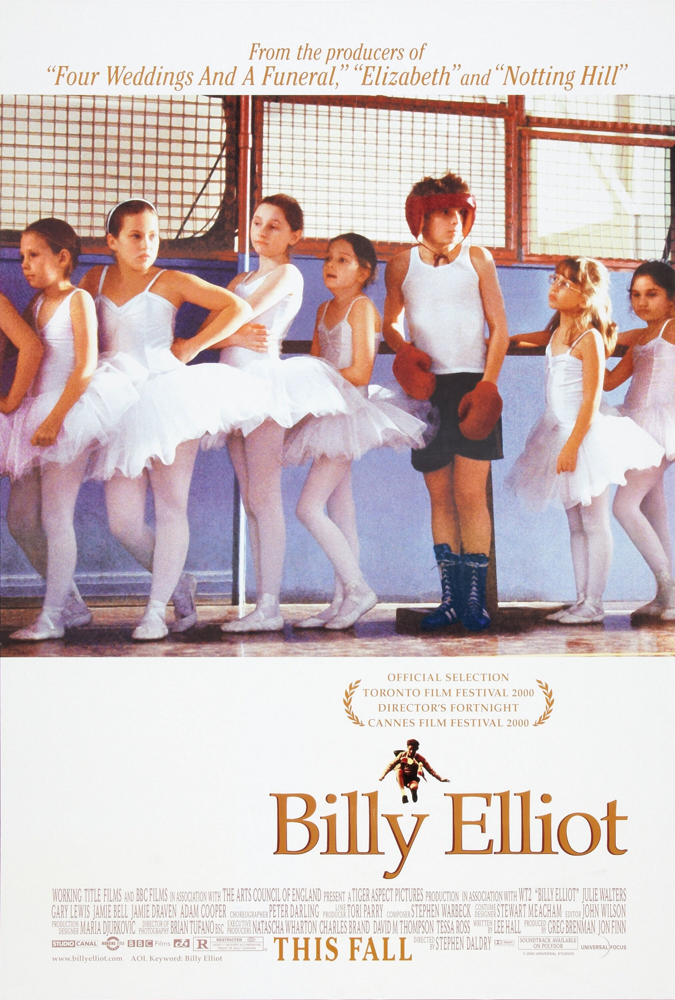
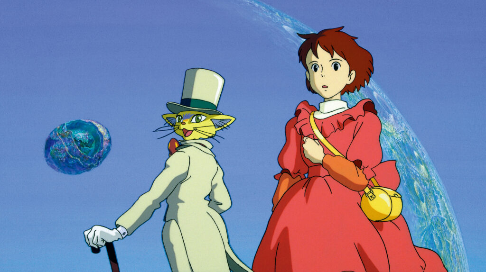
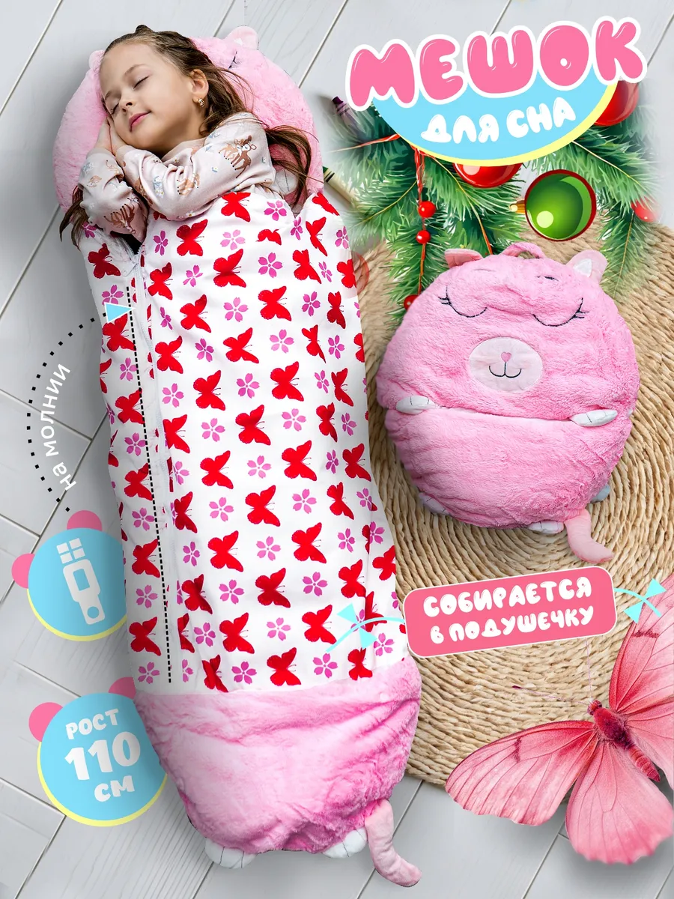
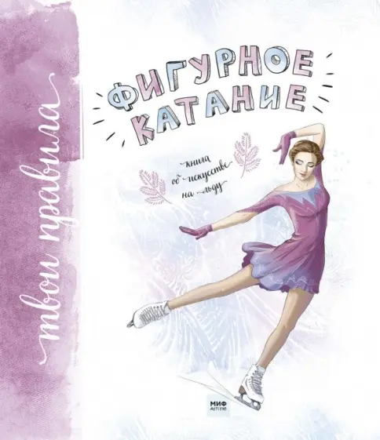
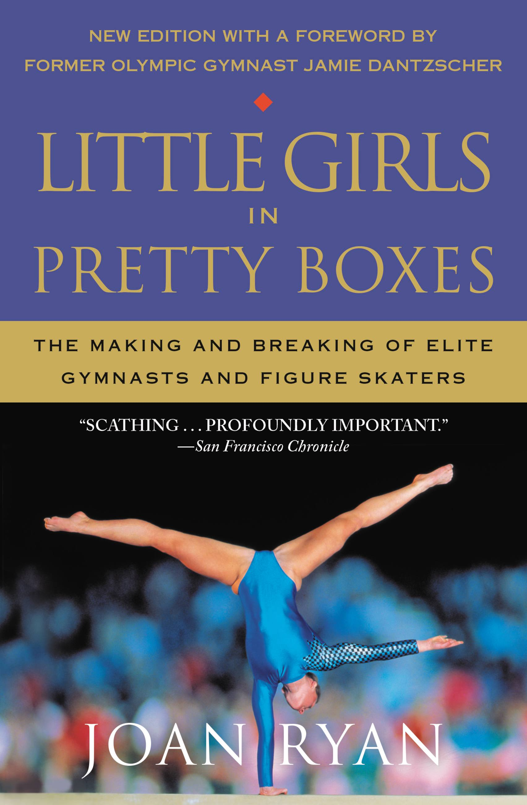

№003Обложка выпуска «Мама, я гуляю».

№003К середине мая ритм семьи рушится. Сначала кончается учебный год в основной школе, потом в музыкальной и художественной, потом в спортивных секциях, кружках, ансамблях и шахматных клубах. К концу мая у вас на руках ребенок, у которого больше нет ни одной обязательной точки в неделе. И с ним надо что-то делать до сентября.
В российской родительской культуре эта пауза проходит как-то стыдливо. Ребенок «отдыхает», и кажется, что отдых - это что-то некачественное, бесполезное, упущенное время. Хорошие тренеры, педиатры и педагоги говорят ровно противоположное: пауза - это часть тренировочного цикла, без которой следующий сезон не получится. Этот выпуск длинный; его можно читать подряд, можно по блокам, а можно вернуться к нему через неделю.
⛸ У вас фигурист? Прыгнуть к бонусному разделу с книгами, программами, off-ice тренировками и уходом за коньками →В межсезонье хорошо, когда любимое дело ребенка не исчезает из жизни совсем, а переходит в спокойный формат. Не тренировка, а чтение про тренировку. Не концерт, а биография музыканта. Не соревнование, а книга про спорт. Ниже - три книги на три уровня. Можно выбрать одну под возраст ребенка, можно взять все три и читать параллельно.
Николай Носов, «Витя Малеев в школе и дома». Старая книга, но она держится так крепко, что ее можно спокойно давать ребенку и сейчас. Витя учится справляться сразу с двумя провалами: у него не идет математика и ничего не выходит в футбольной команде. Никакого «поверь в себя» - только помощь друга, месяцы тренировок у стены сарая и очень земной медленный рост.
Кэрол Дуэк, «Гибкое сознание». Книга, которая в США всерьез изменила язык педагогов и тренеров. Дуэк показала: дети, которым говорят «ты умный», и дети, которым говорят «ты постарался», ведут себя в трудной задаче по-разному. Из этого выросла идея growth mindset, которая давно живет не только в школе, но и в спорте, музыке и любой среде, где учатся через ошибки.
Линда Флэнаган, Take Back the Game. Это самое полное и при этом не истеричное современное исследование того, что произошло с детским спортом за последние двадцать лет. Главный тезис Флэнаган: родителям постоянно продают тревогу. «Ваш ребенок отстает. Нужны клуб, лагерь, частный тренер, индивидуальные занятия». Книга возвращает разговор к ребенку и отношениям с ним.

Любая регулярная деятельность ребенка устроена так, что прогресс почти невидим в моменте. Поэтому к маю он часто ощущает не «вот сколько я научился», а «вот сколько мне пришлось ходить». Маленькое упражнение на конец сезона - сесть и проинвентаризировать год. Без галочек, без «в следующем году будет еще лучше», а просто перечислить, что появилось и чего раньше не было.
Для взрослого тут есть ловушка: не превратить разговор ни в разбор ошибок, ни в поток дежурной похвалы. Самый хороший тон - когда взрослый сам отвечает на те же вопросы про свой год. Не «я проверю тебя», а «давай оба расскажем, что у нас изменилось».
В январе 2024 года Американская академия педиатрии выпустила обновленный клинический отчет Overuse Injuries, Overtraining, and Burnout in Young Athletes. В нем есть цифра, которую полезно знать каждому родителю ребенка-спортсмена: 1-2 дня отдыха в неделю от основного спорта и 2-3 месяца в году полной паузы от соревнований и специализированных тренировок.
Это не педагогический жест и не разговор «дайте ребенку полежать». Это медицинская рекомендация, выросшая из исследований перегрузки, нарушений сна, травм и эмоционального выгорания. Burnout в этом контексте - не просто усталость, а комбинация истощения, сниженного чувства достижения и обесценивания самого занятия.
Юдзуру Ханю, объявляя о завершении соревновательной карьеры, сформулировал это очень точно: он больше не хотел быть постоянно оцениваемым. Это сказал не уставший шестилетний ребенок, а человек, который выиграл почти все, что можно было выиграть.
К маю на любого родителя ребенка с занятиями обрушивается одно и то же предложение: запишите его на летний сбор. Аргумент всегда одинаковый: «иначе за лето все растренируется, и в сентябре придется догонять». Звучит логично, и отказаться кажется безответственным. Но врачи, психологи и опытные тренеры уже много лет говорят довольно однозначно: для большинства детей до подросткового возраста интенсивный летний сбор по тому же виду занятий - плохая идея именно потому, что отменяет паузу.
Это сбор по тому же занятию или что-то другое? Это интенсив или лагерь с компанией? Кто инициатор - ребенок или взрослый? Что говорит конкретно ваш ребенок, если дать ему право на любой ответ?
Если сбор все-таки нужен, полезно держать в голове три простых правила: не делать один сбор за другим, не вешать на ребенка ожидание результата и оставлять после сборов хотя бы две недели полного бездействия по этой теме.

Если после разбора в предыдущем блоке вы поняли, что сбор все-таки вписывается в логику вашего лета, вот один реальный вариант, который имеет смысл смотреть. Официальная Детско-юношеская футбольная академия ПФК ЦСКА проводит летние сборы в Сочи в июле 2026 года для детей от 6 до 14 лет - и для полевых игроков, и для вратарей.
Группы небольшие, не больше 16 человек на тренера, по две тренировки в день. Кроме обычной программы заявлены товарищеские матчи, работа с тренерами ПФК ЦСКА и возможность для самых ярких ребят получить приглашение на просмотр. Базируется лагерь в апарт-отеле «Имеретинский 3*» в Сириусе, с трехразовым питанием и проживанием ребенка вместе с родителем или сопровождающим.
Цены и потоки лучше смотреть уже на лендинге: на момент сборки выпуска пакет начинался от 155 200 рублей. Если будете рассматривать, я бы смотрел на этот блок не как на «обязательный путь к будущему футболиста», а как на вариант для семьи, которая осознанно выбирает именно такой формат лета.
⚽ Узнать про потоки и ценыКогда у ребенка заканчивается сезон, его тело и голова по инерции хотят двигаться так же, как привыкли за полгода. И самый плохой ответ - «теперь будем сидеть и отдыхать». Тело не понимает «отдыхать». Тело понимает «двигаться так же» или «двигаться по-другому». Поэтому AAP отдельно подчеркивает: лучше всего в межсезонье работает cross-training, то есть смена доминирующего движения на любое другое.
Дополнительные секции «на время паузы», жесткий график без школы и сравнения с другими детьми. Если у кого-то из группы уже сборы в Сочи, это не аргумент. Лето может быть просто летом.

История одиннадцатилетнего мальчика из шахтерской семьи, который случайно попадает на балет и понимает, что хочет заниматься именно этим. Фильм работает не как «история успеха», а как очень точное кино про то, что значит выбрать любимое вопреки ожиданиям семьи. Для подростка, который сам сейчас в чем-то неочевидном для окружения, это очень поддерживающее кино.
Важно помнить, что это британское социальное кино: в оригинале там грубый язык, тяжелый контекст и открытая бедность. С детьми 10-11 лет лучше смотреть только в дубляже и с готовностью объяснять бытовой фон.

Полнометражный фильм Studio Ghibli про четырнадцатилетнюю Сидзуку, которая пытается написать свою первую книгу и понять, готова ли она чем-то заниматься всерьез. Это кино не про спорт и не про «талант» в школьном смысле, а про сам момент выбора и про родителей, которые не давят, а просто рядом.
«Athlete A», «I, Tonya» и «Spinning Out» - это уже взрослый разговор о темной стороне больших спортивных индустрий. Для ребенка до 14 лет он чаще просто слишком тяжелый.
Для родителя здесь не нужен один «идеальный» линк. Нужны спокойные голоса, к которым можно вернуться в мае, когда усталость уже накопилась. Я оставляю два варианта без лишней публицистической грязи: подкаст «Экспекто патронум» Анны Красильщик и Анны Шур и аудиокнигу «К себе нежно» Ольги Примаченко. Это не инструкции по воспитанию спортсмена, а разговоры, после которых взрослому становится чуть просторнее дышать.
В межсезонье полезно иметь несколько музыкальных дорожек, которые просто живут в доме: пока готовите, едете на дачу или разбираете вещи после секции.

В семье с ребенком, который весь год был привязан к расписанию, лето становится шансом на спонтанность. И главная вещь, которая эту спонтанность внезапно делает реальной, - собственный спальный мешок ребенка. С ним можно остаться у друзей с ночевкой, поехать в палатку, заночевать на даче или спать на полу у бабушки без логистического квеста с одеялами.
Хороший детский спальник служит пять-семь лет. Это не та категория, где имеет смысл экономить до бессмысленности: дешевые мешки или не греют, или весят почти как взрослые.
Перед первой поездкой полезно «обкатать» спальник дома: дать ребенку поспать в нем одну-две ночи в безопасной обстановке. Тогда на даче или в палатке мешок уже ощущается как свой, а не как еще одна новая тревожная вещь.
Достаньте вместе с ребенком ту вещь, которая весь год жила у двери и была постоянно в работе: коньки, балетки, скрипку в чехле, нотную папку, скетчбук, шахматную доску. Протрите, проверьте, что все цело, и уберите до сентября. Именно уберите, а не оставьте на виду «вдруг пригодится».
Это маленький психологический жест, который дает телу и голове понятный сигнал: сезон закончился. Не как-то сам собой, а с одним конкретным действием. Если убрали одну вещь, выпуск выполнен. Вы великолепны.
Этот раздел собран специально для семей, у которых ребенок занимается фигурным катанием. Если это не ваш случай, его можно спокойно пропустить. Если ваш - здесь как раз тот самый мягкий мостик между сезоном и летом.
Для ребенка: «Фигурное катание. Книга об искусстве на льду» Оксаны Тонкачевой - добрый и понятный путеводитель по тому, как вообще устроен этот мир. Для подростка: мемуары Нейтана Чена - хороший контрапункт к традиции «через боль к победе». Для взрослого: Little Girls in Pretty Boxes Джоан Райан - жесткая, но очень отрезвляющая карта рисков элитного спорта.


В межсезонье фигурку полезно смотреть не как разбор техники, а как искусство. Для этого хорошо работают пять контрастных программ: Юдзуру Ханю «Seimei», Нейтан Чен «Rocketman», Алина Загитова «Черный лебедь», Юна Ким с Бизе и пара Тотьмянина - Маринин в Турине.
Фигуристам полезно летом слушать музыку, которую они потенциально могли бы катать потом: классику, балет, неоклассику, большие саундтреки. Не чтобы срочно выбирать программу, а чтобы внутри накапливался музыкальный словарь.
Для семейного просмотра: фильм «Роднина» на Кинопоиске и документальный фильм «Алина Загитова: Главное» в поиске VK. Для подростка 13+ и взрослого: Notte Stellata Юдзуру Ханю и документалка Yuzuru Hanyu: Hope on the Ice.
Если у вас дома маленький фигурист, в «Слойке» есть один скрытый режим, который как раз делался с расчетом на такие семьи. Где он и как открывается, тут не спойлерю. Подсказка одна: он там, куда обычно не нажимают.
Погодный бот и приложение, которое помогает быстро понять, как одеть ребенка перед прогулкой. А дальше туда же удобно будет отправлять и новые выпуски.
Открыть @sloika_ibotЕсли выпуск оказался полезным, можно скинуть 10, 15 или 50 рублей. Это не пафосный сбор, а способ сказать: «да, продолжайте, это нужно».